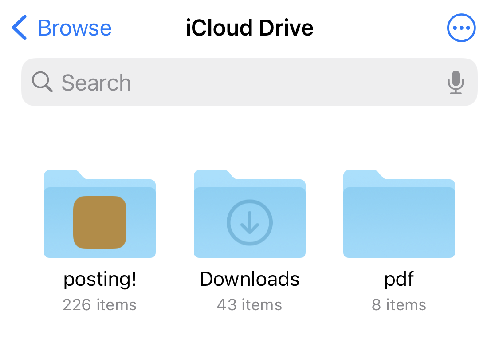
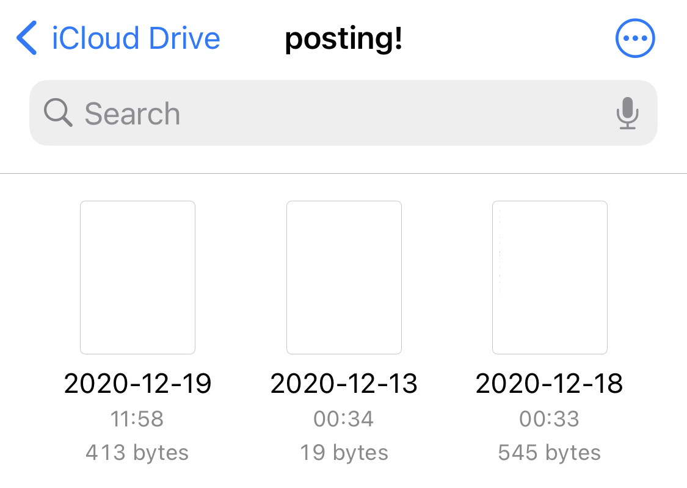
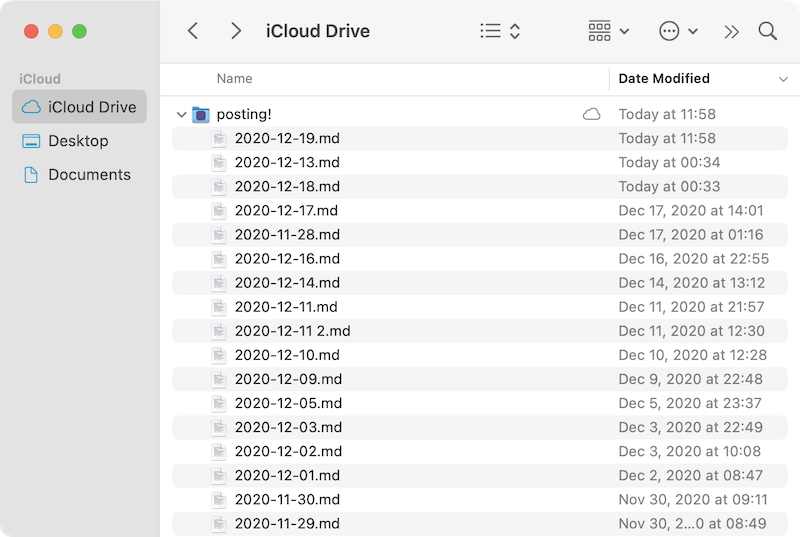

on posting!, your posts are private and yours only
who can read your posts?
the short answer? only you.
the longer answer: posting! does not send your posts to our
servers. if this ever changes, the app will explain and ask before
sharing any data.
all posts are saved locally to your iCloud Drive, similarly to how
apple’s notes app works. you can read about how
apple secures your iCloud Drive data, but the short answer is that it’s
encrypted in transit and rest.
it’s incredibly difficult for apple to read your posts, and
impossible for me to read your posts.
how to access and export your data
if you ever want to export posts from posting!, you can use the
built-in
Files
app on your device to view all of your posts you’ve ever created in
plain, markdown formatted text.
posting! in the iOS Files app:


posting! in the macOS Finder:

hopefully, this clears up any questions you have about the way posting!
handles your data. but if you still have any questions, please
email me. i would love to put
any concerns to rest and provide any needed clarification.